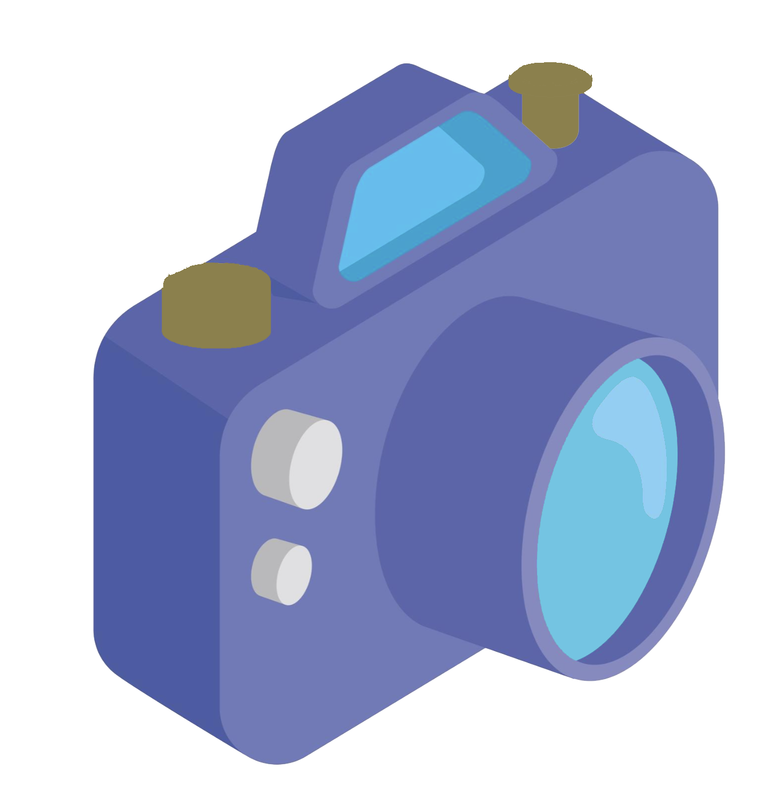

A self-taught developer studying daily since January 2023
with the following passions:
 Writing Music & StoriesBirds
Writing Music & StoriesBirdsI began dabbling in HTML, CSS, and Python in October 2022,
wondering if
I'd even like it...
And after a break from November to January I dove back in,
and have been loving it ever since. I have some big goals!

Thank you for getting this far! I graduated from UC Santa Barbara in 2017 with a BA in Film and Media. From there, I moved to Ethiopia and taught English to my 9th graders and learners of all ages from 2017-2019, while also becoming advanced in the Amharic language. Selam naw! Tenastilin!
After that, I moved to LA to pursue a career in film. I spent two suit-wearing years in the trenches of a talent agency, honing my skills as an expert communicator, multitasker, and client-facer. Early in 2021, I moved back to Santa Barbara to work at Robert Zemeckis’s company, where I’ve been fortunate to work with an amazing team and meet my favorite celebs. (Hence, being Hanks’s fave barista).
In my free time, I devour new skills. I am…
Paragliding.Consuming fantasy, sci-fi, and horror novels and movies.Planning my future wedding with someone I haven't met yet.I learn fast, work hard, dislike capitalism, and find that I mesh with teams quickly.